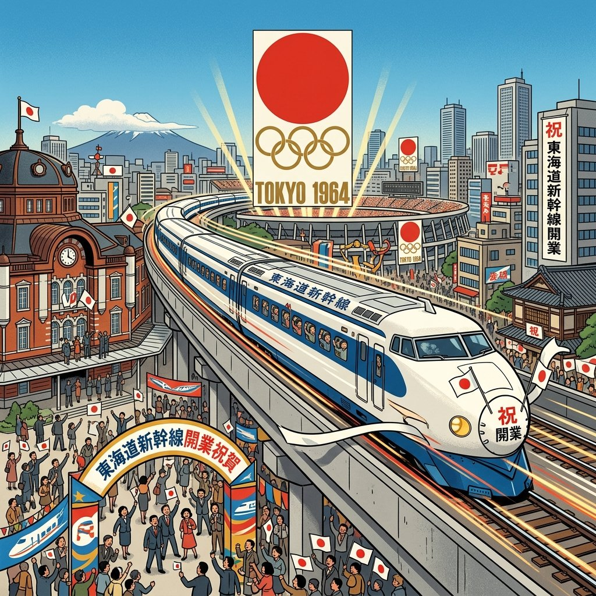
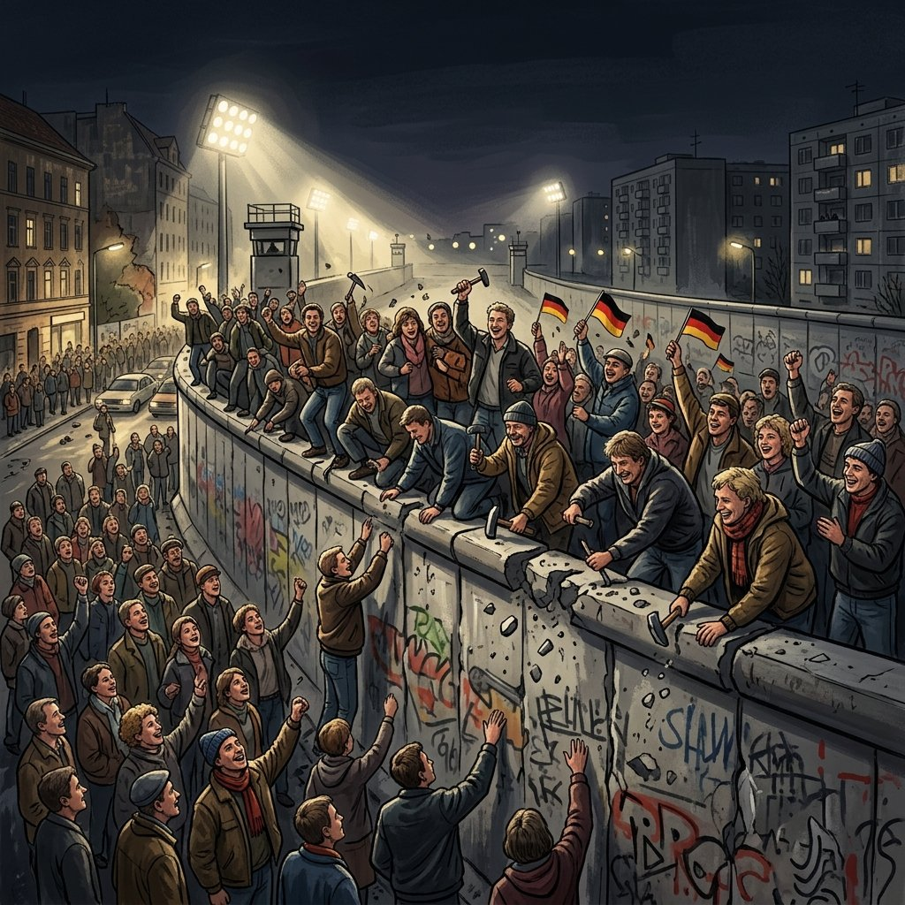

34. 高度経済成長と世界の変化
主権を回復し国際社会に復帰した日本は、そこから驚異的な経済発展の時代へと突入します。国民の生活は劇的に便利になり、日本は世界第2位の経済大国へと上りつめました。今回は、その「高度経済成長」の光と影、バブル経済、そして世界を二分していた「冷戦」の終結まで、激動の昭和後期から平成初頭の流れを追っていきます！
1. 高度経済成長（こうどけいざいせいちょう）と生活の変化
1950年代半ばから1970年代初頭にかけて、日本の経済は年平均10%を超える驚異的なスピードで成長し続けました。これを高度経済成長と呼びます。
① 生活を激変させた家庭電化製品
人々の給料が増え、家庭生活を便利にする家電製品が爆発的に普及しました。時代によって「憧れの生活用品」の主役が移り変わりました。
- 三種の神器（さんしゅのじんぎ・1950年代後半）：
白黒テレビ・電気洗濯機・電気冷蔵庫 - 3C（新・三種の神器・1960年代後半）：
カラーテレビ (Color TV)・クーラー (Cooler)・乗用車 (Car)
② 東京オリンピックと交通網の発達（1964年）
1964年、アジアで初めてとなる夏季オリンピックの東京オリンピックが開催されました。これに合わせて、世界初の高速鉄道である東海道新幹線が開通し、首都高速道路などの交通網が急速に整備されました。日本は戦後復興を遂げた姿を世界にアピールしました。

図1：1964年の東京オリンピック開催と、時速200kmで走る東海道新幹線開業のイメージ
2. 経済成長のひずみ（公害）と成長の終焉
急速な経済発展の一方で、工場からの排水や排気ガスが対策なしに垂れ流され、住民の健康や環境に深刻な被害をもたらしました。
① 四大公害病（よんだいこうがいびょう）
特に被害が大きく、裁判で企業の責任が認められた４つの公害病は中学社会で超重要です。
◆ 四大公害病のまとめ
- 水俣病（みなまとびょう）：熊本県水俣湾周辺。原因物質は工場の排水に含まれた有機水銀（メチル水銀）。
- 新潟水俣病（にいがたみなまとびょう）：新潟県阿賀野川流域。原因物質は同じく有機水銀。
- イタイイタイ病：富山県神通川流域。原因物質は鉱山から流出したカドミウム。骨がもろくなり激痛が走る病気。
- 四日市ぜんそく（よっかいちぜんそく）：三重県四日市市。石油化学コンビナートの排煙に含まれた亜硫酸ガスなどによる大気汚染。
※国は公害対策を急ぎ、1967年に公害対策基本法を制定。さらに1971年には、対策の司令塔となる環境庁（かんきょうちょう）（現在の環境省）を発足させました。
② 石油危機（オイルショック・1973年）
1973年、第四次中東戦争をきっかけに原油価格が約4倍に暴騰する石油危機（オイルショック）が起きました。資源のほとんどを輸入に頼る日本は大混乱に陥り、トイレットペーパーや洗剤の買いだめ騒動が発生。物価が跳ね上がって、戦後初めて経済成長率がマイナスに転落し、高度経済成長は終わりを告げました。
3. バブル経済と冷戦の終結（1980年代末〜1990年代）
① バブル経済とその崩壊
1980年代の後半、土地や株の価格が実力以上に異常に値上がりするバブル経済が発生しました。日本中がお金に沸きましたが、1990年代初頭に急激に価格が暴落し、バブルは崩壊しました。これ以降、日本は長い景気低迷期に入ることになります。
② 冷戦の終結（1989年）とソ連の解体（1991年）
世界をアメリカとソ連で二分していた「冷戦」も、終わりを迎えます。
ソ連ではゴルバチョフ書記長が改革（ペレストロイカ）を進めて東欧の民主化を容認し、1989年にドイツで東西を隔てていた「ベルリンの壁」が壊されました。同年の12月、アメリカとソ連の首脳が地中海のマルタ島で会談（マルタ会談）し、冷戦の終結を宣言しました。
さらに1991年には、社会主義国の親玉であったソビエト連邦（ソ連）が解体され、東西冷戦体制は名実ともに完全に幕を閉じました。

図2：1989年、人々が壁にのぼり、歓喜の中で取り壊された「ベルリンの壁」のイメージ
🔥 この単元のテスト対策・暗記のコツ
-
★
三種の神器（1950年代）と3C（1960年代）の分類：
・記述や選択問題で時期を問われます。「洗濯機・冷蔵庫・白黒テレビ」が最初で、「車・クーラー・カラーテレビ」が高度経済成長の後半です。 -
★
四大公害病の名前・場所・原因物質：
・特に「イタイイタイ病 ＝ カドミウム」「水俣病 ＝ 有機水銀」の組み合わせは、化学物質名も含めて漢字で正確に書けるようにしておきましょう。 -
★
高度経済成長を終わらせた出来事：
・1973年の石油危機（オイルショック）。トイレットペーパーの買い占めなどのエピソードも有名です。年号「涙（1973）のオイルショック」で暗記。 -
★
冷戦終結の流れと重要語句：
・1989年のマルタ会談での冷戦終結宣言と、1991年のソ連解体。どちらも世界史・日本史の非常に大きな転換点として頻出です。